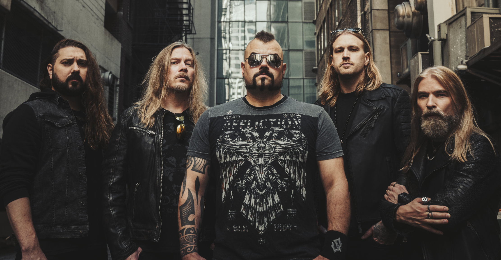

Historie Sabatonu - část 1
Hudební skupina Sabaton byla založena v roce 1999 Joakimem Brodénem (zpěv, klávesy), Pärem Sundströmem (basová kytara), Richardem Larssonem (bicí souprava), Rikardem Sundénem a Oskarem Monteliusem (oba kytara), začínajícími mladými hudebníky, kteří poslouchali stejnou hudbu, ze švédského města Falun. Původní název kapely měl být Aeon, ale toto jméno již bylo zabráno jinou švédskou metalovou skupinou. Členové tedy použili název Sabaton, což je v angličtině výraz pro část rytířského brnění, která chrání chodidlo. Po několika koncertech v malých klubech ve Švédsku a vydání demo alba Fist for Fight chtěli s novým bubeníkem Danielem Mullbackem vydat pod nezávislým italským vydavatelstvím Underground Symphony album Metalizer. Skupině se ale nakonec nepodařilo vydání desky prosadit.
Následně se Sabaton rozhodli v roce 2004 natočit a vydat demo album Panzer Batallion, které bylo mnohem úspěšnější než Metalizer a skupina byla následně kontaktována mnohými nahrávacími společnostmi. Vyjednávání podmínek bylo ovšem komplikované a skupině se nezamlouvalo, a tak natočila debutové album Primo Victoria (2005) na své vlastní náklady. To se nahrávalo ve studiu Abyss Studio ve švédském městě Ludvika a producentem byl Tommy Tägtgren, bratr švédského hudebníka Petera Tägtgrena. Poté začali znovu vyjednávat s nahrávacími společnostmi a nakonec podepsali smlouvu se švédským vydavatelstvím Black Lodge Records.
